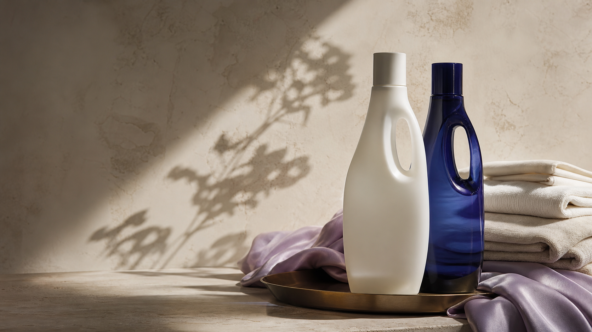
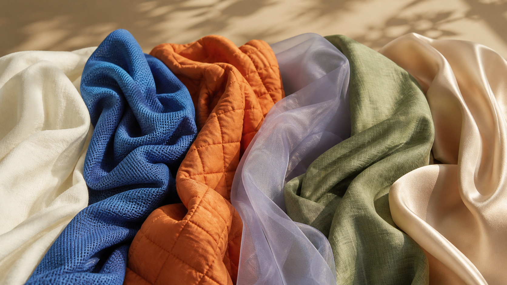

01
PROTECTION AS PRECISION
净澜 Jinglan
看不见的，也该被认真洗去。将日常洁净落实为清晰可靠的防护习惯。

一套从清洁力到触感与气味的生活照料系统。
A COMPLETE CARE WARDROBE
衣物不是一次性被洗净的物件。它承接运动后的汗水、通勤的气息、家的温度，也成为我们抵达之前的第一印象。
01 / THE CARE MATRIX
五个独立品牌，以不同的功能与感受，共同铺展出从“净”到“悦”的照料光谱。
01 / PROTECT
以明确、可靠的日常防护，建立每一次清洗的安心起点。
日常洁净 · 衣物防护THE MATERIAL CONTINUUM
每一种照料，都有自己的触感。

02 / FIVE WORLDS
品牌不是并列的货架，而是照料旅程中的五个感官停靠点。
PROTECTION AS PRECISION
看不见的，也该被认真洗去。将日常洁净落实为清晰可靠的防护习惯。
ROOTED DAILY RITUAL
把日常消耗的部分，慢慢养回来。以自然感的照料节奏，为忙碌生活留出呼吸。
A SOFT PLACE TO LAND
留一层轻柔给亲近的日常。在织物的包裹感中，感受舒适、亲密与松弛。
COMFORT IN THE DETAIL
洁净之后，仍然值得被温柔对待。让舒适从贴近肌肤的细节持续发生。
THE FINISHING NOTE
让衣物成为抵达之前的第一印象。以香气、顺滑与垂坠，完成属于你的衣物表达。
03 / CARE BY MOMENT
MOMENT / 01
从高频接触到衣物气味，让回到家的第一件事，成为重新掌握自己节奏的仪式。
ONE WARDROBE, FULL CARE